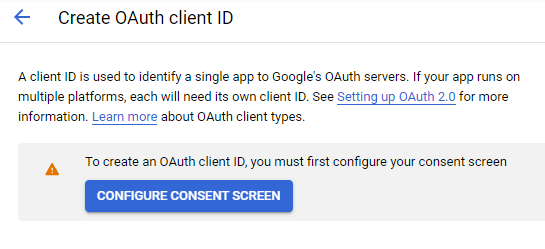
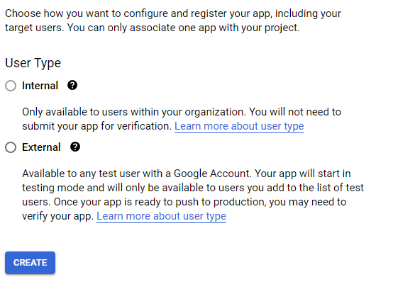
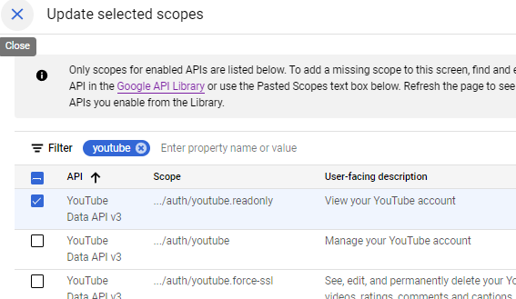
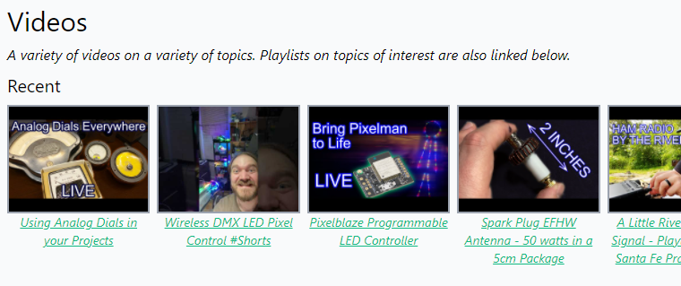

Auto-Generated YouTube Thumbnails
One thing I'd like to have for both my Demilight project page and the homepage is an automatically generated gallery of thumbnails of my recent YouTube uploads, either from a specific playlist or from all of my uploads. Unfortunately, this doesn't seem to be a straightfoward thing to do with YouTube's built-in embedding tools. But perhaps we can figure out a way to do so using the YouTube Data Api.
As one might guess from my approach to the Advent of Code challenges, my preferred language for bashing together solutions like this is Python. So I'll be following the Python Quickstart Guide for the YouTube Data API to see if that gets me anywhere.
Since I prefer to work inside a pipenv, I'll start by running pipenv install google-api-python-client --python 3.10 and pipenv install google-auth-oauthlib google-auth-httplib2 to get the prerequisite libraries set up.
On the Google Cloud Platform API page, I'll click the project button at the top and create a new project called "hugo-youtube-playlists". In the library panel, I'll enable the YouTube Data API v3 for this new project as well.
Editors note - the following 3 steps turned out to be unnecessary, and are included here for posterity. Feel free to skip ahead to the next editor's note.
The next step, according to the guide, creating an oauth2 clientID, is a a bit more involved, as I first need to configure my consent screen.

And since I'm not a Google Workspace User, I can apparently only create "External" apps, which means I'll have to manually add users to the list of tes users who can use my app... which should be fine, since the only user will be me, I expect.

The settings for creating a consent screen don't seem to arduous, and most are optional besides the application name and some contact email information. The only scope I expect the app to need access to is read-only access to the YouTube Data API v3; thankfully, the filtering function on the 34-pages of possible scopes helps find that.

Finally, I'll add myself as a "test" user (though up to 100 are allowed, I only need 1).
Editor's note: actually necessary steps pick up here.
Now, I'll head over to the YouTube data API's sample for listing channel data and copy that over into a script. Actually, though the YouTube API explorer allows you to run code using just an API key and returns a valid response, the sample code provided only works for OAuth authentication. Thankfully, Stack Overflow comes to the rescue as it so often does, with a simple bit of code that uses an API key to make a request. From there, I built a couple of useful utility functions that get, for a given Channel ID, the playlist representing All Uploads and, for a given playlist, get the most recent X videos (5 by default).
yt-request.py
import json
def prebuild():
from googleapiclient.discovery import build
with open('config.json', 'r', encoding='utf-8') as infile:
config = json.load(infile)
api_key = config['yt_api_key'] # Please set your API key
api_service_name = "youtube"
api_version = "v3"
return build(api_service_name, api_version, developerKey=api_key)
def getPlaylistVideos(playlistID, maxVids = 5):
youtube = prebuild()
request = youtube.playlistItems().list(
part="snippet,contentDetails",
maxResults=maxVids,
playlistId=playlistID
)
response = request.execute()
#print(json.dumps(response, indent=4))
return (response)
def getUploadsPLFromChannelID(channelID):
youtube = prebuild()
request = youtube.channels().list(
part="snippet,contentDetails,statistics",
id=channelID
)
response = request.execute()
return(response['items'][0]['contentDetails']['relatedPlaylists']['uploads'])
if __name__ == "__main__":
print(getUploadsPLFromChannelID("UCjgmTMVx2B5_DOB3bCZBq7A"))
print(getPlaylistVideos("UUjgmTMVx2B5_DOB3bCZBq7A"))Scroll to see full code
In this case, the API key I created earlier is stored in the config.json file, which I've of-course added to my .gitignore file so it doesn't pop up on Github and do all kinds of nefarious things. The YouTube ID in the above code snippet is also the default one provided.
With these methods created, it's pretty straightforward to write a little script that just pulls the 5 most recently uploaded videos from my youtube channel and stashes the data in a json file.
generateAll.py
from ytgallery import *
myChannelID = "UCjgmTMVx2B5_DOB3bCZBq7A"
myUploads = "UUjgmTMVx2B5_DOB3bCZBq7A"
def generateIndexGallery():
videos = getPlaylistVideos(myUploads, maxVids=5)
info = list()
for vData in videos['items']:
vid = {
'id': vData['snippet']['resourceId']['videoId'],
'title': vData['snippet']['title'],
'thumbnailURL': vData['snippet']['thumbnails']['high']['url']
}
info.append(vid)
with open("../../data/indexvideos.json", "w+") as outfile:
json.dump(info, outfile)
def main():
generateIndexGallery()
if __name__ == "__main__":
main()Scroll to see full code
So, I can create a list of recent videos. Now how to display them on the homepage? Thankfully, Hugo has built-in functionality for working with json/toml/yaml data in the form of Data Templates. It took quite a bit of bumbling around to work out the proper syntax, but here's what I worked out:
- Data (as json, yaml, or toml file) goes into the /data folder (optionally into subfolders). For me, this is in a file at data/indexvideos.json for videos that will be embedded into index.html.
- We range over the data in a particular file using syntax like
range $.Site.Data.indexvideos. Note the lack of file extension. - Within that range, we reference our partial, and we pass it the current context using the '.' operator. This allows the partial to receive the data from the current "object" the range function is operating over.
- Within each partial, we can refer to individual attributes using double-mustache syntax, with using the dot operator to refernece the current context as in
{{ .id }}
That's a bit of a word jumble, but perhaps it will be more clear visually. Here is the directory structure of files, a selected part of the template file (index.html) and the partial (yt_index.html):
Directory Structure
my-hugo-project
├── data
│ ├── yt
│ │ ├──indexvideos.json
├── layouts
│ ├── index.html
│ ├── partials
│ │ ├──yt_index.html
' ' '
' ' 'indexvideos.json (partial)
[
{
"id": "r3Z6bVylrbs",
"title": "Using Analog Dials in your Projects",
"thumbnailURL": "https://i.ytimg.com/vi/r3Z6bVylrbs/hqdefault.jpg"
},
{
"id": "E-TAz610T0c",
"title": "Wireless DMX LED Pixel Control #Shorts",
...index.html (partial)
<div class="flex flex-col space-y-2 md:space-y-0 md:space-x-2 md:flex-row">
{{ range $.Site.Data.indexvideos }}
{{ partial "yt_index.html" . }}
{{ end }}
</div>The dot after the name of the partial is crucial; it passes the current context to the partial template so the partial has access to all the data it needs.
yt_index.html
<div>
<a href="https://www.youtube.com/watch?v={{ .id }}">
<div class="border-2 border-gray-400">
<img src="{{ .thumbnailURL }}" alt="Youtube Video: {{ .title }}" class="w-auto">
</div>
<p class="m-auto text-sm italic text-center">{{ .title }}</p></a>
</div>All this put together creates a series of divs on the front-page corresponding to my 5 most recently uploaded YouTube videos.

I'm currently relying on the fact that the script which generates the json file populates it with 5 videos, but I could also have limited it to 5 videos in the range command using something like range first 5...
Speaking of which, the next step in automation is to have my script that pulls the 5 most recent videos run every time I build the site. Ideally, it would also fail gracefully in the case that it can't retrieve the new videos, i.e. if it can't connect to YouTube's API for some reason. But it turns out that running a Python script from npm is non-trivial - there are a number of ways to do it, including the python-shell package, but it seems like a chunky project in its own right.
This being a static site and all, this isn't exactly always my latest 5 uploaded videos. It's the 5 most recently uploaded videos at the last time Hugo built the site. But that's a decent enough tradeoff for me.